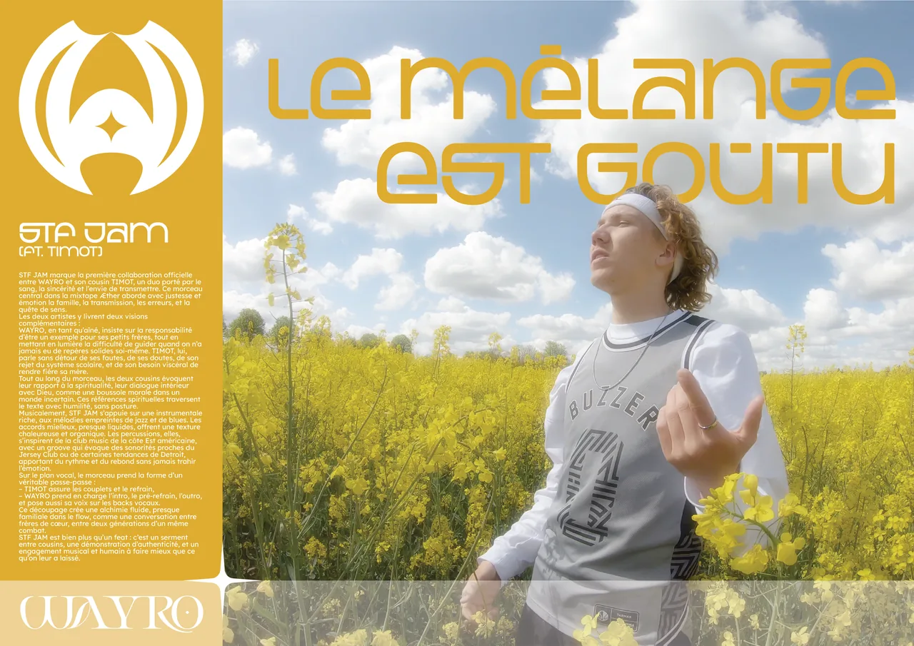
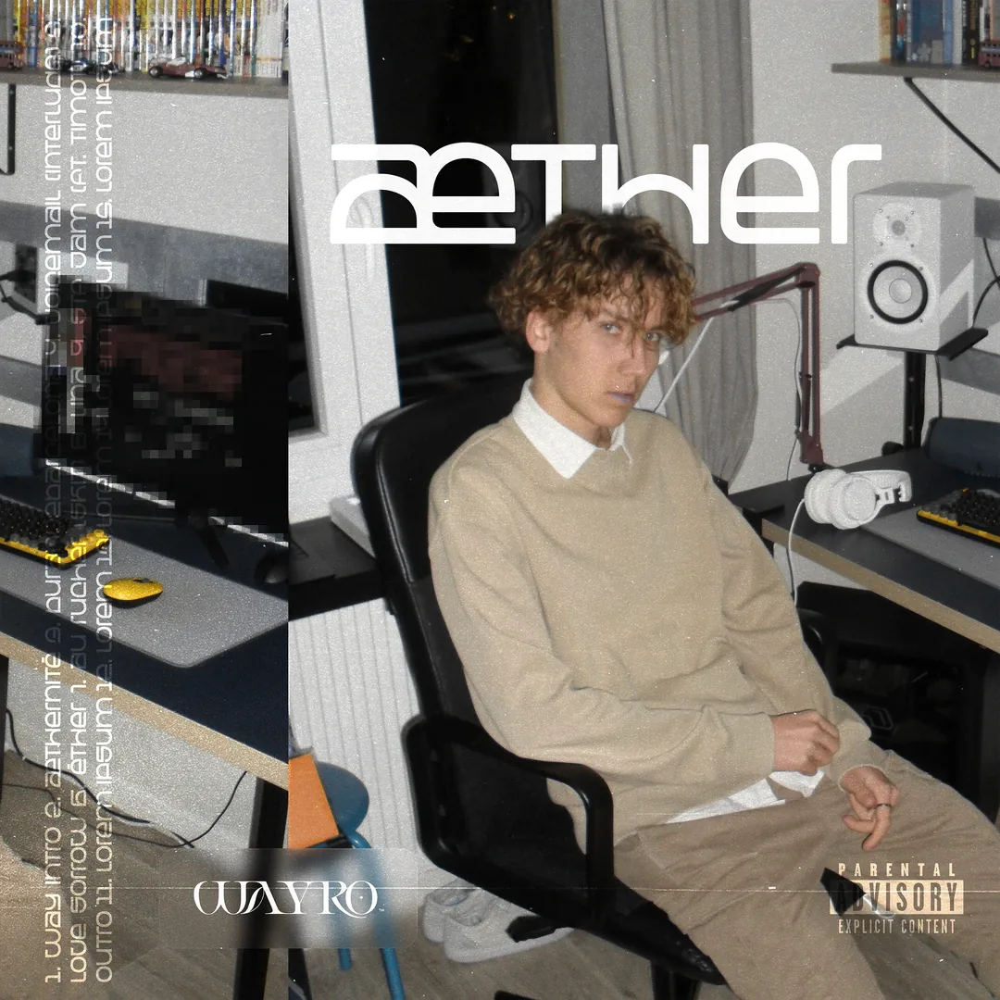

Le projet
Æther, ou l'art de se montrer en entier.
On ne poste jamais que la moitié de soi. Æther, c'est ma tentative de montrer l'autre. Toute la mixtape tient sur une idée que je n'ai pas lâchée : la dualité. La lumière et l'ombre, la façade et l'envers, ce qu'on affiche et ce qu'on tait. Plutôt que de trancher, j'ai bâti l'intégralité de la direction artistique autour de cette tension — jusqu'à en faire un objet qu'on peut retourner dans la main.
Le concept
Une pièce,
deux faces.
La première face est solaire. Bleu éclatant, jaune doré, la lumière de mes voyages — l'Italie, Nice, l'Espagne. C'est la version qu'on met en story : celle où tout est cadré, beau, parfait. La façade qu'on tend au monde.
La seconde est sourde. Noir et blanc, traversé de bleu. Des photos prises en pleine session, dans mon ancienne chambre chez mes parents — là où la musique se fait vraiment, avec ses doutes et ses défauts. L'envers du décor, celui qu'on ne montre pas.
La cover se fend en deux pour le dire d'un seul regard.
Le poster du boîtier
Recto lumière,
verso ombre.
Glissé dans le boîtier du CD physique, un poster pousse le concept jusqu'au bout. Le recto est lumineux : des mots, des réflexions, des remerciements — la part qu'on offre. Le verso bascule dans le sombre : la tracklist et les crédits, la mécanique brute du disque. Une seule feuille, deux mondes, selon le côté qu'on décide de regarder.
Les déclinaisons
Une grammaire,
partout la même.
Une identité ne vaut que si elle tient sur tous les formats. Le même langage visuel s'est décliné sur les stories, les posts Instagram, les covers des singles et les visualiseurs — chaque support rejouant la dualité à sa manière.
Inédits
Ce qui n'est
jamais sorti.
Toute direction artistique laisse des fantômes derrière elle. En voici deux, montrés ici pour la première fois.

Affiche · STF JAM
Pensée pour STF JAM, en feat. avec TIMOT. Restée dans les cartons, jamais publiée.

Cover · Deluxe
La pochette d'une version Deluxe d'Æther. L'idée a été abandonnée — la cover, elle, existe encore.
Mon rôle & mes outils
Tout, de mes mains.
Direction artistique, design graphique, colorimétrie, retouche : 100 % maison, du concept au fichier final. Côté photo, rien de protocolaire — la plupart des images sont sorties d'un smartphone ou d'une GoPro, prises sur le vif. La moitié est de moi, l'autre de ma mère ou de mes amis, captée dans l'instant. Tout a ensuite été façonné sur Illustrator, Lightroom et Photoshop. La spontanéité en entrée, l'obsession du détail en sortie.
La suite
Cette dualité ne s'arrête pas à Æther : elle devient la colonne vertébrale de l'album qui suit, La Rage Ou La Vague. Deux mots, déjà, qui disent la même chose — il faut choisir, ou ne jamais choisir.